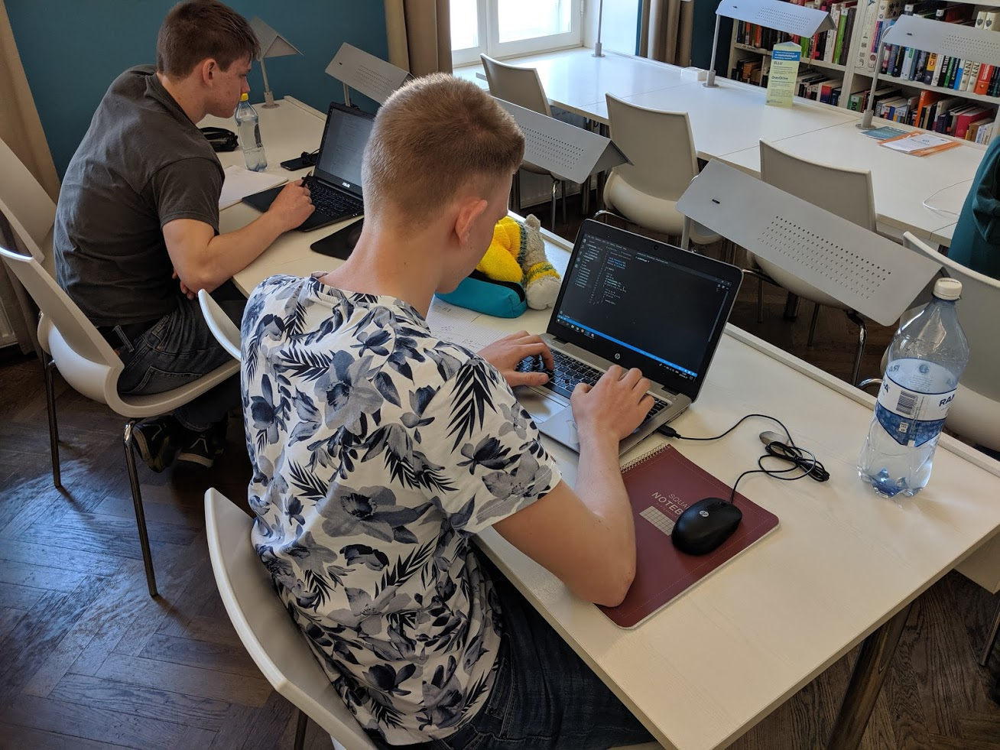

Hej och välkomna till resebloggen till årets Baltic Olympiad in Informatics! I år är vi i Tartu, Estland och det svenska laget består av Fredrik Ekholm, Carl Westerlund, Gustav Kalander, Hugo Eberhard, Loke Gustafsson och Niklas Sandén. Lagledare är jag, Erik Amirell Eklöf, och Jonas Olsson.
Hälften av det svenska laget, alltså Carl, Gustav och Hugo, var redan i Tartu efter en fysiktävling. Resan till BOI började alltså med att samla resten av det svenska laget i Stockholm för att sedan åka färja till Tallinn. Tågen till Stockholm fungerade ungefär så bra som man skulle kunna tänka sig, alltså stora förseningar och AC som var sönder. Men på grund av stora marginaler hann jag, Nickas och Loke precis med färjan efter ungefär 1 och en halv timmes försening till Stockholm.
Efter nattfärjan till Tallinn skulle vi åka buss sista biten till Tartu, dock hade vi en hel dag att spendera i Tallinn. Vi spenderade denna tid på bästa möjliga sätt, nämligen genom att skriva programmeringstävlingen KTH-challenge. Vi som befann oss i Tallinn letade alltså upp ett bibliotek, med gratis WiFi, och satte oss där. Resultaten för det svenska laget var över lag starka, med placeringar på 2a, 5e, 7e, 9e och 13e plats (hela resultatlistan finns här).
Efter en bussresa på ungefär 2 timmar var vi framme i Tartu vid klockan 8 på kvällen. Här träffade vi den andra halvan av det svenska laget och plockade upp BOI-swag som, utöver ryggsäck och T-shirt, i år även inkluderade BOI-temade strumpor, en väldigt lätt handduk och lite andra saker. Efter detta spenderade vi resten av kvällen på BOIs välkomstfest, som tog plats i en simhall med flera rutschbanor och 9 olika typer av bastu!
Nästa dag började med en två timmars practice session. Under denna upptäckte vi att domarsystemet visar detaljerad information om bedömningen för varje individuellt testfall, istället för det normala där enbart begränsad information om bedömningen för hela testfallsgrupper avslöjas. På grund av detta kan man relativt enkelt läcka ut information om strukturen på de hemliga testfallen, vilket vi i det svenska laget gjorde under practice session för att fusklösa ett av problemen (som egentligen var helt trivialt). Hoppas ingen känner för att fuska under själva tävlingen!
Efter practice session var det öppningsceremoni och sedan en orienteringstävling i Tartu där vi skulle springa runt till olika stationer och lösa någon uppgift för att få veta vilken nästa station var. Eftersom det finns en stark korrelation mellan tävlingsresultat och mängden godis som har ätits, gick vi också förbi en godisaffär för att handla snacks till morgondagens tävling.
Under kvällen hade lagmedlemmarna det roligt med en annan programmeringstävling, Google CodeJam, samtidigt som vi ledare satt i ett långt möte där vi, utan framgång, försökte övertala arrangörerna att minska mängden information som domarsystemet ger ut. Men nu ser vi fram emot första tävlingsdagen, som är imorgon!